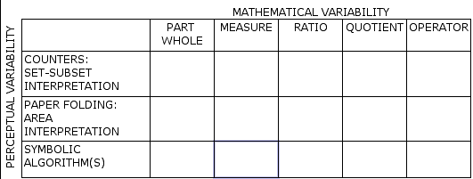
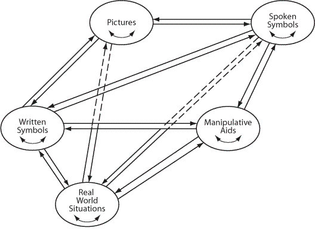

| Rational Number Project Home Page |
|
|
| Behr, M., Post, T., & Lesh R. (1981, July). Construct Analyses, Manipulative Aids, Representational Systems and the Learning of Rational Numbers. In Proceedings of the Fifth Conference of the International Group for the Psychology of Mathematics Education. (pp. 203-209). Grenoble, France: PME. |
|
|
CONSTRUCT ANALYSIS,
MANIPULATIVE AIDS, REPRESENTATIONAL SYSTEMS
AND LEARNING RATIONAL NUMBER CONCEPTS*
[An Update on Activities of the Rational Number Project]
|
Meryln J.
Behr |
Richard Lesh |
Thomas R.
Post |
Sommaire:
Une etude de recherche educative financee par The National Science Foundation of the USA est en cours sous la direction de M. Lesh (Northwestern University) M. Behr (Northern Illinois University) et M. Post (University of Minnesota) dans Ie cadre de l'enseignement fonde sur la theorie. La base theorique de cette etude comprend
a) les aspects de l' analyse de Kieren du nombre rationnel en 5 subconstructions.
b) les principes de Z.P. Dienes sur l'integration multiple et la variabllite mathematique
c) une extension des 3 modes de Bruner de la pensee representationnelle
d) la psychologie du traitement de l’information en ce qui concerne Ie developpement des divers genres des structures de la memoire.
L'Etude du Nombre Rationnel contient egalement une partie sur l'evaluation. Une methode d'ensemble portant sur les concepts, rapports et operations du nombre rationnel est en cours de developpement et d'utllisation chez 1600 eleves et plus des grades 2 - 8 (de 7 a 13 ans) dans 5 endroits differents. Des entrevues a fins d'evaluation et des tests educatifs sont egalement experimentes avec des enfants.
Le materiel educatif developpe dans Ie cadre de cette theorie integree est offert a de petits groupes (6 membres) d'enfants ages de 9 et 10 ans (grade 4 et 5) dans des classes quotidiennes sur une periode de 16 a18 semaines. Une observation reguliere et systematique de la pensee et performance des enfants est faite pendant Ie cours ; ces observations ajoutees aux frequentes entrevues individuelles avec les enfants. fournissent la majorite des donnees.
L'analyse de ces donnees fournira un apercu des etapes de developpement du concept du nombre rationnel a partir du tout debut en passant par les phases preliminaires de raisonnement proportionnel.
INTRODUCTION
The Rational Number Project (RNP) is a cohesive program for research on rational number learning. This program consists of well-defined theory based instructional and evaluation components as well as an overall plan for validating project generated hypotheses. This effort differs along a number of substantive dimensions from previous research efforts in the area of rational number learning. Previous researchers have focused attention on "state of the art" type research, that is data collection without formal instruction. Kieren (1976), Novillis (1976), Noelting (1978, 1980), Hart (1978, 1981), and Karplus (1980) have utilized paper and pencil tests and interview results to formulate hierarchies of rational number and proportional reasoning concepts. These studies have provided important insights into the hierarchical nature of the acquisition of these concepts. The Michigan Studies (Payne 1976) examined various approaches to fraction algorithm and various manipulative materials over an eight-year period of time. The initial comparative studies have evolved into studies more concerned with assessing the quality and durability of evolving cognitive structures. This latter concern is more closely related to our work. In an attempt to extend and reformulate previous efforts, (RNP) has developed and implemented a complete instructional and evaluation program. Our intent is to describe rational number development from its genesis to its formal operational level in well-defined instructional settings. The major concern is the identification of psychological and mathematical variables which impede and/or promote the learning of rational number concepts.
THEORETICAL FOUNDATIONS OF THE PROJECT
Of particular concern to the project are three components of learning and knowing concepts of rational number. The first involves a logical mathematical analysis of rational number (Kieren, 1976) and the integration of this mathematical analysis with categories of manipulative aids in the context of theory developed by Z.P. Dienes. The second involves an interactive model for describing modes of representation, and the third involves delineation of various memory structures which are developed by the learner as a result of exposure to a theory-based instructional sequence.
1. Kieren (1976) provided a logical analysis of the rational number concept into five subconstructs -- part-whole relationships, measure relationships, ratio, quotient, and operator. Post (1974) and Post and Reys (1979) have integrated Kieren's work with a logical analysis of concrete models for representing rational number concepts. This model, presented in Figure 1, incorporates the mathematical and perceptual variability principles of Dienes (1967). This analysis provides an organizational scheme for the development and selection of appropriate instructional materials. Consideration of both rows and columns provides for both the abstraction and generalization of these concepts.

FIGURE 1
OPERATIONAL DEFINITION OF THE CONCEPT OF RATIONAL
NUMBER FROM WHICH INSTRUCTIONAL ROUTINES ARE DEVELOPED
Based on this matrix we have conceptualized instruction for rational numbers as suggested in Figure 2.

FIGURE 2
CONCEPTUAL SCHEME FOR INSTRUCTION OF RATIONAL NUMBERS
The arrows and dashed arrows in Figure 2 are to suggest hypothesized relationships between rational number concepts, relations, and operations. The diagram suggests that (1) partitioning and the part-whole construct of rational numbers are basic to learning other constructs of rational number; (2) the ratio construct is most "natural" to maturate the concept of equivalence and nonequivalence; (3) operator and measure constructs lend themselves to the understanding of operations of multiplication and addition.
II. The Modes of Representation and translations emphasized in the project materials are depicted below. The reader will note that Figure 3 represents an extension of Bruner’s early work on representational modes. Lesh (1979) reconceptualized Bruner’s (1966) enactive mode, partitioned Bruner’s iconic mode into manipulative materials and static figural models (i.e., pictures), and partitioned Bruner’s symbolic mode in to spoken language and written symbols. Furthermore, these systems of representation were interpreted as interactive rather than linear. The revised model follows:

FIGURE 3
An Interactive Model for Using Representational Systems
A major hypothesis of the project is that it is the ability to make translations among and between these several modes of representation that make ideas meaningful to learners.
This interactive instructional model or modes of representation is refinement through empirical verification to determine which of the translations are crucial in mathematics learning. Two triads in the model are of particular interest in our research. One involves the translations between manipulative aids and mathematical symbols, with the oral mode serving as a mediating facilitator in this translation process. The other involves real world situations, manipulative aids, and written symbols; of concern is the question of aids to facilitate the mathematical modeling required in problem solving.
III. Various writers discuss categorizations of memory. Gagne and White (1978) consider the relationship between memory structures and learner performance. Of interest to this project are memory structures called episodic, imaginal, semantic, and intellectual skills.
COMPATIBILITY OF THE THEORIES
Figure 1 suggests that learning will be enhanced when overt attention is paid to the nature and scope of both the manipulative materials and the mathematical dimensions of the concept to be learned. Figure 3 predicts that mathematical learning, retention, and transfer will be enhanced when instructional routines provide for interaction among and within the various modes of representation. The memory related literature suggests that learning, retention, and transfer will be greater when interrelationships among memory structures are made. The interactive model suggests instructional variables for investigation in order to determine their effects on a learner's thinking processes, and the memory literature directs a researcher's attention to the observation of behaviors that suggest the existence of specific thinking processes. Thus, the three theories are not only compatible but also provide powerful framework for investigating the phenomena involved in learning from manipulative materials.
THE RATIONAL NUMBER PROJECT
The RNP has three distinct yet complementary components: Instructional, Evaluation, and Diagnostic and Intervention. All adhere to the same theoretical and philosophical foundations. Twenty weeks of student instructional materials have been developed. The instructional materials reflect the project's underlying theoretical foundations and emphasize part-whole, quotient, measure, and ratio interpretations or number, and involve translations within and between five representational modes. (see Figure 3).
INSTRUCTION
Instructional activities with children began in mid-October, 1980 and continued thru March, 1981. Three groups of 6 children (4th grade in DeKalb, 4th and 5th grade students in Minneapolis), were instructed daily using theory based project generated materials. These materials addressed many of the standard rational number concepts, but in addition paid particular attention to the use of manipulative aids and translations within and between various modes of representation. Extensive observational data were taken during and immediately after instruction, much of which was recorded on video tape for subsequent analysis. A minimum of three persons were present at each of these instructional sessions. (One teacher and 2 observers)
DATA COLLECTION AND ANALYSIS
Observational data, frequent interviews, and audio or video taping of many lessons resulted in a large amount of anecdotal data. In addition, four major types of instruments have been employed by the instructional component.
1. The Rational Number Test - identified levels of student achievement in three areas: rational number concepts, relations and operations. These tests, which were developed by the projects evaluation component, were used with project instructed children and with classroom sized groups in grades 2 thru 8 (ages 7-12) across give geographic locations (N> 1600).
2. Class observation guides were designed to provide insights into the cognitive processes employed by students when dealing with rational number concepts in the structured instructional setting.
3. Interview Protocols. The individual interview, conducted with each student after each lesson, is considered a crucial source of project data. These interviews, lasting from 15 to 50 minutes, provide extensive information as to the mental processes, memory structures (inferred), thought patterns, and understandings gained and utilized. Interview data is examined on a lesson-by-lesson basis to assess the impact of specific instructional "moves" on conceptual development. Either audio or video tapes were always used to provide a record of these interviews.
4. Translation Coding System. This instrument was designed to provide specific information as to the types of translations, which students used, the relative frequency of each type, and the identification of those, which proved particularly troublesome.
In addition to these instruction related instruments, the evaluation component has also developed a series of clinical interviews and instruction mediated tests. Together the data gathered with these instruments will provide a rather comprehensive view of rational number development in children and should add substantially to the body of knowledge already in existence. Our work has led to the following observations about the use of manipulative aids. Each is supported by extensive observation, anecdotal records and audio or video tapes:
1. Use of multiple aids to represent a concept is more helpful in children's learning than use of a single aid.
2. After a concept is initially introduced with a chosen manipulative aid, subsequent representations with manipulative aids which differ in perceptual features cause the child to rethink the concept and learning is facilitated.
3. A method for introducing a "new" manipulative to the discussion of a given concept has been devised, tested, and proven successful.
4. In order for a manipulative aid to facilitate learning, it appears necessary that it initially cause cognitive disequilibrium. We believe this to be in striking contrast to what one gleans from current mathematics education literature.
Space constraints here preclude consideration of project results in any detail. The presentation at Grenoble will focus specifically upon our findings related to 1) translations within and between modes of representation and 2) the impact of perceptual distractors on the quality of children’s rational number thinking. A second paper, providing more details, will be distributed at that time.
REFERENCE NOTES
Behr, M., Post, T., & Lesh, R. The Role of Manipulative Aids in the Learning of Rational Numbers, NSF RISE Grant #SED 79-20591, Northern Illinois University, 1979.
Lesh, R. Applied Problem Solving. NSF RISE grant #SED 8017771, Northwestern University, 1980.
SELECTED REFERENCES
Behr, M., Post, T., Silver, E., & Meirkiewicz, D. Theoretical Foundations for Instructional Research on Rational Numbers. In R. Karplus (Ed.), Proceedings of the Fourth International Conference for the Psychology of Mathematics Education. Berkeley, CA: University of California, 1980.
Dienes, Z.P. Building Up Mathematics (Revised Edition), London: Hutchinson Educational, 1967.
Gagne, Robert M. and White, Richard T. Memory Structures and Learning Outcomes. Review of Educational Research 48: pp. 187-222, 1978.
Hart, K.M., et al. Children's Understanding of Mathematics' 11-16. John Murray Publishers: London, 1981. Chapters 5 and 7.
Kieren, Thomas E. On the Mathematical, Cognitive and Instructional Foundations of Rational Numbers. In R. Lesh (Ed.) Number and Measurement: Papers From a Research Workshop, ERIC, 1976.
Lesh, R. Mathematical Learning Disabilities: Considerations for Identification, Diagnosis, Remediation. In R. Lesh (Ed.) Applied Mathematical Problem Solving, ERIC, 1979.
Noelting, G. A Learning Hierarchy for Ratios and Fractions. In R. Karplus (Ed.) Proceedings of 4th International Conference for the Psychology of Mathematics Education. Berkeley, CA: University of California, 1980.
Payne, J.N. Review of Research on Fractions. In R. Lesh and D. Bradbard (Eds.) Number and Measurement: Papers From a Research Workshop. Columbus, Ohio. ERIC/SMEAC, 1976.
Post, T.R. and Reys,
R.E. Abstraction Generalization and Design of Mathematical Experiences
for Children. In K. Fuson and W. Geeslin (Eds.) Models for Mathematics
Learning. ERIC/SMEAC, Columbus, Ohio, 1979
*Paper Presented at the Fifth Conference of the International Group for the Psychology of Mathematical Education. Grenoble France, July 1981.
This paper is based in part on research supported by the National Science Foundation under grant number SED 79-20591. Any opinions, findings, and conclusions expressed are those of the authors and do not necessarily reflect the views of the National Science Foundation.